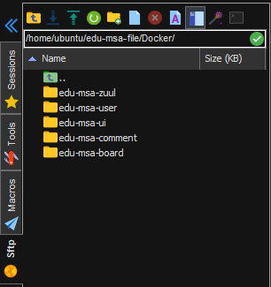
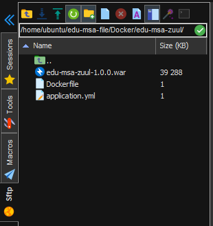
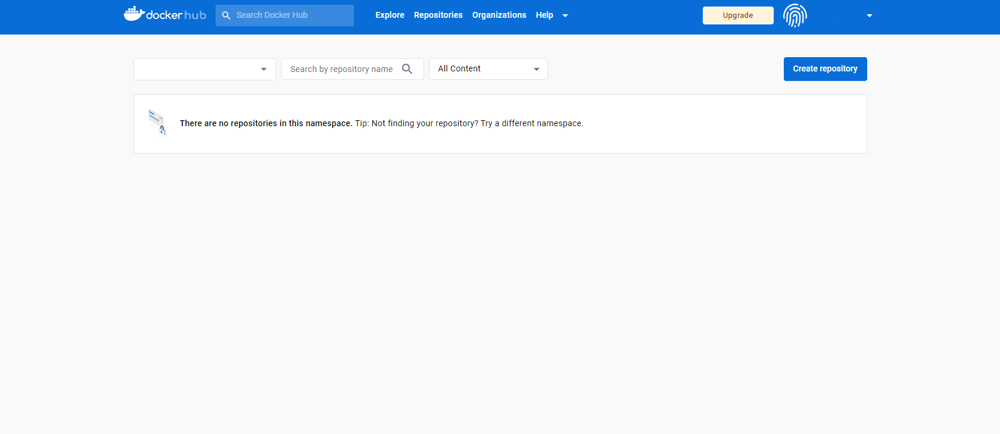
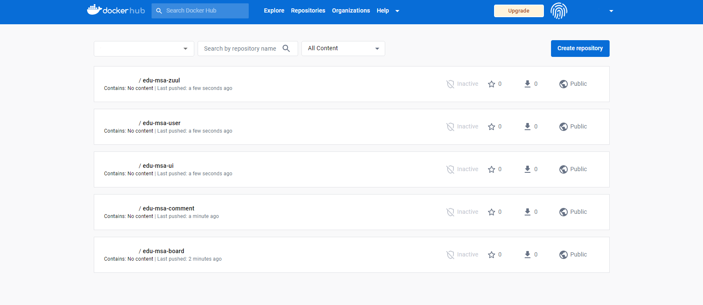
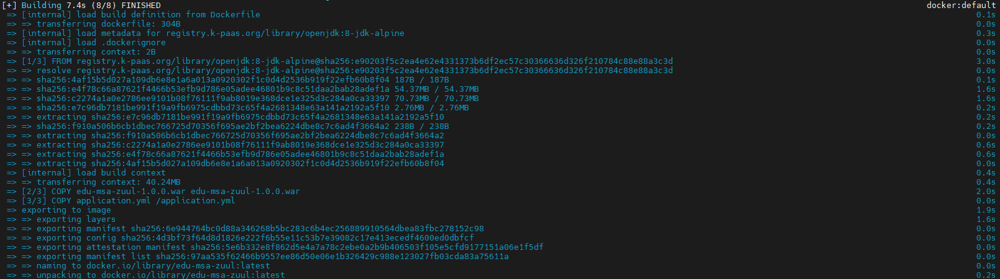
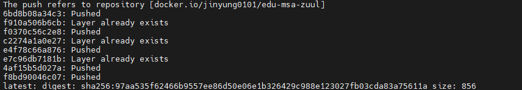
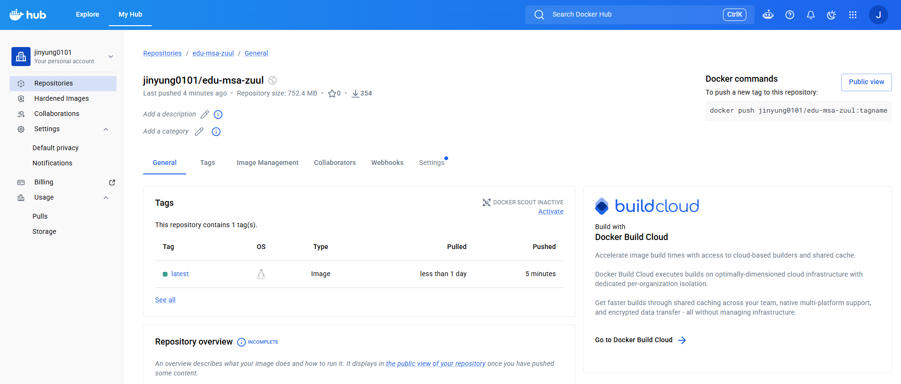

Container 기술의 이해
— 컨테이너는 왜 가볍고, 어떻게 이미지로 만들어 배포하는가
1강에서 "왜 컨테이너를 쓰는지"만 짚었다면, 이번 강의는 컨테이너가 VM과 무엇이 다르길래 가벼운지부터, Docker로 이미지를 실제로 만들고(Dockerfile → Image → Container), Docker Compose로 여러 컨테이너를 묶어 관리하고, 마지막엔 실제 MSA 애플리케이션 이미지를 빌드해 Docker Hub에 푸시하는 전 과정을 원리 수준에서 다룹니다.
이 강의를 보는 순서
- 왜 컨테이너인가 — VM(Hypervisor) 방식과 비교해 컨테이너가 왜 가벼운지, Container Engine과 Runtime은 어떻게 역할을 나누는지
- Docker로 어떻게 이미지를 만드는가 — Dockerfile을 Build하면 Image, Image를 Run하면 Container라는 흐름과 CLI
- 여러 컨테이너는 어떻게 한 번에 관리하는가 — Docker Compose로 docker run 반복을 하나의 yaml로 대체하기
- 직접 만들어보기 — Dockerfile 실습 1·2, 그리고 MSA 애플리케이션 이미지를 빌드해 Docker Hub에 푸시하는 실습
왜 컨테이너인가 — Container 기술의 이해
MSA로 애플리케이션을 잘게 쪼갤수록 배포해야 할 단위 수가 늘어납니다. 이 수많은 단위를 서버마다 똑같이, 빠르게 띄우려면 "가상화"를 더 가볍게 만들 방법이 필요했고, 그 답이 컨테이너입니다.
01 · Container란 무엇인가
컨테이너(Container)란 가상화된 운영체제 위에서 애플리케이션의 독립적인 실행에 필요한 파일(소스코드, 라이브러리 등)을 모은 패키지입니다. 애플리케이션의 코드를 관련 구성 파일, 라이브러리 및 앱 실행에 필요한 종속성과 함께 번들로 제공하는 SW 패키지이기도 합니다. (출처: Google Cloud, Azure 공식 홈페이지)
1강에서 본 것처럼 MSA는 하나의 큰 애플리케이션을 사용자관리·주문관리·상품관리 같은 작은 서비스 수십~수백 개로 쪼갭니다. 이 각각을 서버에 배포할 때마다 "이 서비스가 어떤 언어 버전, 어떤 라이브러리, 어떤 설정으로 동작하는지"를 사람이 매번 맞춰주면 실수가 나기 쉽고 속도도 느립니다. 컨테이너는 실행에 필요한 모든 것(코드+라이브러리+설정)을 하나의 패키지로 묶어, "이 패키지만 있으면 어디서든 똑같이 동작한다"는 전제를 만듭니다.
온프레미스 서버, 여러 퍼블릭 클라우드, 개발자의 노트북 등 실행 환경이 서로 다른 곳에서도 동일하게 동작해야 하는 모든 배포 상황 — 특히 뒤에서 다룰 MSA 애플리케이션(사용자/댓글/게시글 API 등)처럼 서비스 단위가 많고 각 서비스의 실행 환경이 서로 다른 경우에 유리합니다.
02 · VM vs Container — 무엇이 다르길래 가벼운가
컨테이너 이전에도 "가상화"는 있었습니다 — Virtual Machine(VM) 방식입니다. 둘의 차이는 "OS를 어디까지 통째로 복제하느냐"에 있습니다.
※ Container 쪽에는 VM의 "Guest OS" 줄이 없고, 대신 Host OS 위에서 바로 Container Engine이 앱들을 격리 실행합니다 — 이 한 줄 차이가 컨테이너를 가볍게 만드는 핵심입니다.
| 구분 | Virtual Machine | Container |
|---|---|---|
| 격리 단위 | Guest OS 단위로 완전히 분리 | 프로세스(Bin/Libs + APP) 단위로 격리 |
| OS 구성 | Host OS 위 Hypervisor, 그 위에 VM마다 별도의 Guest OS | Host OS(Linux) 위 Container Engine이 바로 여러 APP을 격리 실행 (Guest OS 불필요) |
| 실행 매개체 | Hypervisor | Container Engine |
| 무게·속도 | Guest OS 전체를 부팅해야 해서 무겁고 느림 | Host 커널을 공유해 가볍고 빠르게 시작 |
VM은 애플리케이션 하나를 실행하는 데도 완전한 OS(Guest OS) 한 벌을 통째로 올려야 합니다. Container는 Host OS의 커널을 그대로 공유하고, 그 위에서 Container Engine이 앱마다 필요한 Bin/Libs + APP만 프로세스 수준으로 격리합니다. "OS를 새로 부팅하지 않는다"는 것이 핵심이며, 이 덕분에 이미지 생성·배포가 기민해지고 여러 컨테이너를 고밀도로 띄울 수 있습니다.
VM은 앱 하나를 실행하려고 매번 아파트 한 채(운영체제 전체)를 새로 지어 올리는 것과 비슷합니다. Container는 이미 지어진 건물(Host OS) 한 채 안에서 방만 나눠 쓰는 것과 같습니다 — 건물을 새로 짓는 공사(OS 부팅)가 필요 없으니, 그만큼 빠르고 가볍게 방(컨테이너)을 늘릴 수 있는 것입니다.
03 · Container의 10가지 특징
컨테이너가 가벼운 격리 방식이라는 것은 실무에서 아래 10가지 이점으로 이어집니다. (출처: 쿠버네티스 공식 문서)
- 1. 기민한 애플리케이션 생성과 배포
- 쉽고 효율적인 컨테이너 이미지 생성으로 애플리케이션을 빠르게 생성·배포할 수 있음
- 2. 지속적인 개발·통합·배포
- 안정적, 주기적으로 이미지를 빌드·배포할 수 있어 CI/CD가 가능해짐
- 3. 개발과 운영의 관심사 분리
- 빌드/릴리즈 시점에 이미지를 만들기 때문에 개발과 운영의 역할이 분리됨
- 4. 가시성(Observability)
- 애플리케이션의 헬스와 그 밖의 시그널을 볼 수 있어 관측 가능성이 높음
- 5. 환경 간 일관성
- 노트북과 클라우드에서 모두 동일하게 구동되어 개발·테스트·운영 환경의 차이가 없어짐
- 6. 클라우드·OS 배포판 간 이식성
- 주요 퍼블릭 클라우드 어디에서든 구동되어 이식성이 높음
- 7. 애플리케이션 중심 관리
- 논리적 리소스를 사용하는 OS 중심으로 추상화 수준이 높아져 애플리케이션 자체를 중심에 두고 관리 가능
- 8. 느슨하게 묶인 분산·유연한 배포
- 마이크로서비스 형태로 애플리케이션을 배포·관리하기 쉬움
- 9. 리소스 격리를 통한 예측 가능한 성능
- 리소스가 격리되어 있어 애플리케이션 성능을 예측할 수 있음
- 10. 고효율·고집적 리소스 사용
- 동일 자원에 더 많은 워크로드를 올릴 수 있음
이 특징들은 1강에서 배운 "클라우드 네이티브가 실제로 주는 이점(빠른 배포, 롤링 업데이트, 스케일아웃, 이식성)"이 실제로 어떤 하부 기술 덕분에 가능한지를 설명합니다 — 즉 컨테이너의 특징이 클라우드 네이티브 애플리케이션의 특징으로 그대로 이어집니다.
위 10가지를 한 문장으로 줄이면: 컨테이너로 배포하면 "더 빠르게 배포되고, 내 노트북에서 되던 게 서버에서도 똑같이 되고, 같은 장비에 더 많은 서비스를 올릴 수 있다"는 뜻입니다. 즉 개발자 입장의 편의(1~4번)와 운영 입장의 효율(5~10번)을 동시에 얻는 셈입니다.
04 · Container Engine과 Container Runtime
컨테이너를 실제로 띄우는 과정은 역할이 다른 두 소프트웨어가 나눠서 처리합니다. (출처: Red Hat 블로그)
- Container Engine — 컨테이너를 관리하기 위한 API나 CLI 도구를 제공하는 소프트웨어. 예: 도커 엔진(docker-ce), Red Hat의 Podman, 로켓컴퍼니의 rkt.
- Container Runtime — 루트 파일시스템과 메타데이터(spec file)를 받아 실제로 컨테이너를 실행하는 도구. 가장 일반적으로 쓰이는 런타임은 OCI(Open Container Initiative)를 준수하는 runC이며, containerd·cri-o도 결국 runC에 의존합니다.
사용자가 명령을 내리면 ① Container Engine이 사용자 입력을 받고 → ② 컨테이너 이미지를 레지스트리에서 내려받고(pull) → ③ 컨테이너 실행 방법을 명시한 메타데이터(spec file)를 만든 다음 → ④ 이 정보를 Container Runtime(runC 등)에 전달하고 → ⑤ Runtime이 실제로 격리된 프로세스를 실행합니다. 즉 Engine은 "사용자와의 접점"이고 Runtime은 "실제 실행 담당자"입니다.
Engine은 손님의 주문을 받는 "홀 서빙 직원", Runtime은 실제로 조리하는 "주방장"에 비유할 수 있습니다. 사용자는 Engine(직원)에게 말만 걸면 되고, 이미지를 받아와 실제로 컨테이너를 띄우는 손발 노동은 Runtime(주방장)이 담당합니다.
컨테이너가 VM보다 가벼운 이유(OS를 새로 부팅하지 않음)와, 그 가벼움이 Engine→Runtime의 역할 분담으로 실제 실행되는 원리를 봤습니다. 다음 절부터는 이 컨테이너를 "관리·운영"하는 대표 도구인 Docker를 다룹니다.
Docker — 컨테이너를 만들고 다루는 도구
컨테이너가 "무엇을 실행할지"에 대한 개념이라면, Docker는 그 컨테이너를 "어떻게 만들고 실행할지" 실무에서 다루게 해주는 도구입니다.
01 · Docker란 무엇인가
Docker란 애플리케이션과 실행 환경을 포함한 컨테이너를 관리 및 운영하는 오픈소스 가상화 플랫폼입니다. (출처: 도커 공식 문서)
빠른 실행 속도 손쉬운 배포 가벼운 용량 애플리케이션의 독립성 높은 보안성 보장 낮은 오버헤드 이미지 생성 및 공유
Container Engine 역할을 하는 소프트웨어가 여럿(Podman, rkt 등) 있지만, Docker는 이미지 생성부터 실행, 공유(Docker Hub)까지 하나의 CLI로 일관되게 제공해 "컨테이너를 만들고 배포하는 표준 워크플로우"로 자리잡았습니다.
02 · Dockerfile → Image → Container 흐름
Docker에서 컨테이너가 만들어지는 흐름은 다음 세 단계입니다. (출처: JFrog 블로그 "A Beginner's Guide to Understanding and Building Docker Images")
Dockerfile --(Build)--> Docker Image --(Run)--> Docker Container- Dockerfile — 도커 이미지를 생성하기 위한 설정 파일이며, 다양한 도커파일 명령어로 작성함.
- Docker Image — 컨테이너 실행에 필요한 파일과 설정값 등을 포함하며, Dockerfile을 Build하여 생성.
- Docker Container — 격리된 공간에서 애플리케이션을 동작시킨 상태이며, Docker Image를 Run하여 실행.
Dockerfile은 "레시피(설계도)", Image는 그 레시피대로 만들어진 "완성품 스냅샷", Container는 그 스냅샷을 실제로 켜서 동작시킨 "실행 중인 인스턴스"에 비유할 수 있습니다. 같은 이미지에서 여러 컨테이너를 동시에 run할 수 있다는 점이 핵심 — 레시피(Dockerfile)와 스냅샷(Image)은 한 번만 만들고, 실행(Container)은 필요한 만큼 반복할 수 있습니다.
03 · Dockerfile 작성 — 명령어와 실제 예시
| 명령어 | 설명 |
|---|---|
FROM | 컨테이너 기반이 되는 베이스 이미지 지정 |
WORKDIR | 명령을 실행할 작업 디렉토리 설정 (bash의 cd와 같은 기능) |
COPY | 컨테이너 빌드 시 외부 파일을 컨테이너 내부로 복사 |
RUN | 베이스 이미지에서 빌드 시 실행할 명령 |
ARG | 빌드 시 사용할 변수값 설정 |
EXPOSE | 외부에 노출시킬 포트 번호 |
ENTRYPOINT | 컨테이너 실행 시 수행되는 명령어를 지정(프로파일 값 변경 등에 사용) |
이 코드가 하는 일을 한 줄로 요약하면: 톰캣(웹서버) 베이스 이미지 위에 설정 파일과 war 파일을 복사해 넣고, 28082 포트를 열어주는 Dockerfile입니다.
FROM tomcat:9-jre8-alpine # 컨테이너 기반이 되는 베이스 이미지
FROM tomcat:9-jre8-alpine
WORKDIR /usr/local/tomcat # 명령을 실행할 작업 디렉토리 설정
COPY server.xml ./conf # 컨테이너 빌드 시 컨테이너로 파일 복사
RUN rm -rf ./webapps/* # 베이스 이미지에서 실행할 명령
ARG JAR_FILE=*.war # 파일에 사용할 변수값 설정
COPY ${JAR_FILE} ./webapps/edu-msa-board-1.0.0.war
EXPOSE 28082 # 외부에 노출시킬 포트 번호※ 원본 슬라이드는 이 Dockerfile을 3장(FROM/WORKDIR/COPY → RUN/ARG/EXPOSE → ENTRYPOINT)에 걸쳐 한 줄씩 설명합니다. ENTRYPOINT는 "컨테이너 실행 시 수행할 명령을 지정하며 프로파일 값을 바꾸는 용도로 쓰인다"는 원칙만 다룹니다.
Dockerfile은 요리 레시피 카드라고 생각하면 됩니다. FROM은 "어떤 베이스 재료로 시작할지", WORKDIR은 "어느 작업대에서 작업할지", COPY는 "재료를 어디서 가져와 넣을지", RUN은 "무엇을 실행해둘지", EXPOSE는 "완성된 결과물을 어느 창구로 내보낼지"를 한 줄씩 적어두는 것입니다. 이 레시피대로 한 번 "빌드"하면 언제 다시 만들어도 항상 같은 결과물(이미지)이 나옵니다.
04 · Docker 설치 (Ubuntu 기준)
실습은 Ubuntu 서버 환경을 기준으로 진행합니다. (공식 설치 가이드: docs.docker.com/engine/install/ubuntu)
이 코드가 하는 일을 한 줄로 요약하면: 도커 설치 패키지가 진짜인지 확인하는 데 쓸 서명 키(GPG)를 받아 저장해두는 준비 단계입니다.
# Add Docker's official GPG key:
$ sudo apt update
$ sudo apt install ca-certificates curl
$ sudo install -m 0755 -d /etc/apt/keyrings
$ sudo curl -fsSL https://download.docker.com/linux/ubuntu/gpg -o /etc/apt/keyrings/docker.asc
$ sudo chmod a+r /etc/apt/keyrings/docker.asc이 코드가 하는 일을 한 줄로 요약하면: 앞서 받은 키를 이용해, 우분투가 "도커 공식 배포처"를 신뢰하도록 저장소 주소를 등록하는 단계입니다.
# Add the repository to Apt sources:
$ sudo tee /etc/apt/sources.list.d/docker.sources <<EOF
Types: deb
URIs: https://download.docker.com/linux/ubuntu
Suites: $(. /etc/os-release && echo "${UBUNTU_CODENAME:-$VERSION_CODENAME}")
Components: stable
Architectures: $(dpkg --print-architecture)
Signed-By: /etc/apt/keyrings/docker.asc
EOF
$ sudo apt update05 · Docker CLI — 명령어와 실습
Docker 명령은 docker [options] command 형태를 기본으로 하며, 대부분 추가 권한 없이 일반 사용자로 실행 가능합니다.
| 명령어 | 설명 |
|---|---|
docker version | 버전 정보 표시 |
docker login / docker logout | 컨테이너 레지스트리 로그인/로그아웃 |
docker build [options] [context] | 컨테이너 파일을 사용해 이미지 빌드 |
docker tag image[:tag] target[:tag] | 로컬 이미지에 새로운 이름 추가 |
docker pull [options] source | 레지스트리에서 이미지 가져오기 |
docker push [options] image [dest] | 이미지를 레지스트리로 전송 |
docker run [options] image [cmd] | 이미지로 새 컨테이너 실행 |
docker exec [options] container [cmd] | 실행 중 컨테이너에서 명령 실행 |
docker stop container | 실행 중인 컨테이너 정상 중지 |
docker kill container | 실행 중인 컨테이너 즉시 종료 |
docker ps [-a] [-s] | 컨테이너 목록·정보 출력 |
docker rm container | 컨테이너 삭제 |
docker images | 로컬 이미지 목록 |
| 옵션 | 설명 |
|---|---|
-d | detached(백그라운드) 모드 실행 |
-it | 대화형 터미널 유지(컨테이너를 종료하지 않고 계속 사용) |
--name | 컨테이너 이름 부여 |
-e | 환경변수 설정 |
-p | 호스트:컨테이너 포트 매핑(포트포워딩) |
--rm | 종료 시 관련 리소스 자동 제거(일회성 실행에 자주 사용) |
자주 쓰는 옵션 세 가지만 쉽게 풀면: -d는 "실행해두고 터미널은 계속 내가 쓰게 뒤에서 돌려라"(백그라운드), -it는 "컨테이너 안에 들어가서 직접 명령을 치겠다"(대화형 접속), --rm은 "한 번 테스트해보고 끝나면 자동으로 치워달라"는 뜻입니다. 아래 실습에서 이 옵션들을 하나씩 켜보며 차이를 직접 확인합니다.
-
실습) run 명령어
도커 환경이 정상 동작하는지hello-world이미지로 확인합니다.$ docker run hello-world$ docker run hello-world Hello from Docker! This message shows that your installation appears to be working correctly. To generate this message, Docker took the following steps: 1. The Docker client contacted the Docker daemon. 2. The Docker daemon pulled the "hello-world" image from the Docker Hub. (amd64) 3. The Docker daemon created a new container from that image which runs the executable that produces the output you are currently reading. 4. The Docker daemon streamed that output to the Docker client, which sent it to your terminal. …실제 실습 결과 설치가 정상이면 이 4단계 설명과 함께 "Hello from Docker!" 메시지가 그대로 출력된다.
출력 요약:Hello from Docker! This message shows that your installation appears to be working correctly.→ Docker client가 daemon에 접속 → daemon이 Docker Hub에서 hello-world 이미지를 pull → 새 컨테이너 생성·실행 → 출력을 클라이언트 터미널로 스트리밍. -
실습) -d 옵션
detached 모드로 실행하면 실행 직후에도 터미널을 계속 사용할 수 있습니다.$ docker run -d python:3.8-alpine python -m http.server$ docker run -d python:3.8-alpine python -m http.server Unable to find image 'python:3.8-alpine' locally 3.8-alpine: Pulling from library/python 86e037ebf8b6: Pull complete 2fe9ed713579: Pull complete 43c4264eed91: Pull complete bbd039b2f2dc: Pull complete 259a9516aa4e: Download complete 8ded280900b7: Download complete Digest: sha256:3d93b1f77efce339aa77db726656872517b0d67837989aa7c4b35bd5ae7e81ba Status: Downloaded newer image for python:3.8-alpine ca1161146d90bb4ca08aa6da4d97b277ff916a2d40d6f35eefcbcfb5654350e0실제 실습 결과 로컬에 이미지가 없어 Docker Hub에서 새로 pull 받은 뒤, 컨테이너 ID(해시)만 출력하고 터미널은 바로 돌아온다 — 백그라운드 실행이 확인된다.
-
실습) -it 옵션
컨테이너를 종료하지 않은 채로 터미널을 계속 사용합니다(파이썬 인터랙티브 쉘 진입).$ docker run -it python:3.8-alpine$ docker run -it python:3.8-alpine Python 3.8.20 (default, Sep 12 2024, 21:14:32) [GCC 13.2.1 20240309] on linux Type "help", "copyright", "credits" or "license" for more information. >>>실제 실습 결과 컨테이너 안의 파이썬 인터랙티브 쉘(>>>)로 바로 들어가 명령을 입력할 수 있는 상태가 된다.
-
실습) --name 옵션
컨테이너에 이름을 부여합니다.$ docker run -d --name my-server python:3.8-alpine python -m http.server $ docker ps # NAMES 컬럼에 my-server 확인$ docker run -d --name my-server python:3.8-alpine python -m http.server 60d80f4c3fe75bfe8ecae39399fdee69a1e5acd193e63530fb4ad9ef6cac2bf7 $ docker ps CONTAINER ID IMAGE COMMAND CREATED STATUS PORTS NAMES 60d80f4c3fe7 python:3.8-alpine "python -m http.serv…" 4 seconds ago Up 3 seconds my-server실제 실습 결과 docker ps의 NAMES 컬럼에 지정한 이름(my-server)이 그대로 표시된 것을 확인할 수 있다.
-
실습) -e 옵션
컨테이너 환경변수를 설정합니다.$ docker run -e FOO=bar python:3.8-alpine env # 출력에 FOO=bar 포함됨$ docker run -e FOO=bar python:3.8-alpine env PATH=/usr/local/bin:/usr/local/sbin:/usr/local/bin:/usr/sbin:/usr/bin:/sbin:/bin HOSTNAME=f265fc6c1d49 FOO=bar LANG=C.UTF-8 GPG_KEY=E3FF2839C048B25C084DEBE9B26995E310250568 PYTHON_VERSION=3.8.20 HOME=/root실제 실습 결과 env 출력 중간에 -e로 지정한 FOO=bar가 그대로 컨테이너 환경변수로 들어가 있는 것을 확인할 수 있다.
-
실습) -p 옵션
호스트 포트와 컨테이너 포트를 연결합니다(포트포워딩).$ docker run -d -p 80:8000 python:3.8-alpine python -m http.server # docker ps PORTS 컬럼에 0.0.0.0:80->8000/tcp 확인$ docker run -d -p 80:8000 python:3.8-alpine python -m http.server f1762a91b6f1068554b16d1298f746e603ab3b6da1e2fd51b05564348a136379 $ docker ps CONTAINER ID IMAGE COMMAND CREATED STATUS PORTS NAMES f1762a91b6f1 python:3.8-alpine "python -m http.serv…" 4 seconds ago Up 3 seconds 0.0.0.0:80->8000/tcp, [::]:80->8000/tcp modest_pare실제 실습 결과 PORTS 컬럼에 "호스트포트->컨테이너포트" 형태로 매핑된 것을 확인할 수 있다. --name을 주지 않아 NAMES엔 도커가 임의로 붙인 이름(modest_pare)이 나온다.
-
실습) --rm 옵션
종료 시 컨테이너와 관련 리소스를 자동 제거합니다(일회성 실행).$ docker run --rm -it wernight/funbox nyancat
Docker CLI 하나로 이미지 빌드(build)·배포(push/pull)·실행(run)·운영(ps/stop/rm)까지 전 주기를 다룰 수 있습니다. 다음 절에서는 이 컨테이너가 여러 개로 늘어났을 때(예: DB + 웹서버) 이를 하나씩 docker run 하는 대신 한 번에 관리하는 Docker Compose를 다룹니다.
Docker Compose — 여러 컨테이너를 하나의 서비스로
실제 서비스는 컨테이너 하나로 끝나지 않습니다 — 웹서버 + DB처럼 여러 컨테이너가 함께 떠야 하나의 서비스가 완성됩니다. 이걸 매번 docker run으로 하나씩 실행하는 대신 선언적으로 관리하는 도구가 Docker Compose입니다.
01 · Docker Compose란 무엇인가
Docker Compose란 단일 서버에서 여러 개의 컨테이너를 하나의 서비스로 정의해, 컨테이너의 묶음으로 관리할 수 있는 작업 환경을 제공하는 관리 도구입니다.
컨테이너 여러 개를 각각 docker run으로 실행하려면 볼륨·환경변수·포트 옵션을 컨테이너마다 길게 반복 입력해야 하고, 서로 다른 컨테이너를 하나의 서비스로 묶어 관리하기도 어렵습니다. Docker Compose는 이 모든 컨테이너의 정의를 docker-compose.yml 파일 하나에 선언해두고, 명령 한 번으로 전체를 배포·종료·재시작할 수 있게 합니다.
TV·에어컨·조명을 리모컨마다 따로 켜는 대신, 외출 모드 버튼 하나로 한 번에 다 켜고 끄는 것과 비슷합니다. 컨테이너를 하나씩 docker run으로 켜는 대신, "이 서비스들을 이렇게 묶어서 띄워라"라고 docker-compose.yml 파일 한 장에 미리 적어두면, 그 다음부터는 명령 한 번(docker compose up)으로 전체가 한꺼번에 켜집니다.
02 · Docker Compose CLI
기본 형태는 docker compose [options] command입니다.
| 명령어 | 설명 |
|---|---|
docker compose up [SERVICE...] | 파일에 정의된 컨테이너 서비스 배포 |
docker compose down [SERVICE...] | 실행 중인 Compose 종료 및 초기화(네트워크 포함 제거) |
docker compose stop | 실행 중인 컨테이너 종료(관련 네트워크·데이터는 유지) |
docker compose start | 중지 상태인 컨테이너 다시 시작 |
docker compose restart | 컨테이너들을 중지 후 다시 시작 |
docker compose ps | 컨테이너 목록 및 실행 상태 확인 |
docker compose logs | 컨테이너 로그 확인 |
docker compose build | 이미지 빌드 |
03 · 실습 비교 — docker run 반복 vs docker-compose.yml 한 번
mysql 컨테이너와 nginx 컨테이너를 각각 docker run으로 띄우면 다음처럼 옵션이 길어집니다.
$ docker run -v mysql-data:/var/lib/mysql -e MYSQL_RANDOM_ROOT_PASSWORD=true \
-e MYSQL_DATABASE=wordpress -e MYSQL_USER=wordpress \
-e MYSQL_PASSWORD=awesome-wordpress-password mysql:8.0
$ docker run -p 80:80 -v /var/run/docker.sock:/tmp/docker.sock:ro \
--restart always --log-opt max-size=1g nginx이 코드가 하는 일을 한 줄로 요약하면: 위 두 개의 docker run 명령을 하나의 파일로 합쳐, mysql과 nginx 컨테이너를 docker compose up 한 번으로 같이 띄우도록 정의한 것입니다.
name: mysql_nginx_service # Project 이름
services: # 서비스 정의: 배포할 컨테이너를 정의
mysql: # MySQL 데이터베이스 컨테이너 속성 정의
volumes:
- mysql-data:/var/lib/mysql # mysql-data 볼륨을 MySQL 데이터 디렉터리에 마운트
environment: # MySQL 환경변수
- MYSQL_RANDOM_ROOT_PASSWORD=true # root 계정 비밀번호 자동 생성
- MYSQL_DATABASE=wordpress # 컨테이너 시작 시 생성할 데이터베이스 이름
- MYSQL_USER=wordpress # 생성할 일반 사용자 계정
- MYSQL_PASSWORD=awesome-wordpress-password # 위 사용자의 비밀번호
image: mysql:8.0 # 사용할 이미지
nginx: # Nginx web 서버 컨테이너 속성 정의
ports:
- 80:80 # 호스트의 80번 포트를 컨테이너의 80번 포트에 연결
volumes:
- /var/run/docker.sock:/tmp/docker.sock:ro # Docker 소켓을 read 전용으로 마운트
restart: always # 컨테이너가 종료되면 항상 재시작
logging:
options:
max-size: 1g # 로그 파일 최대 크기 1GB, 초과 시 로그 로테이션
image: nginx # 사용할 이미지
volumes:
mysql-data: # MySQL 영구 저장용 볼륨 정의
external: true # 이미 존재하는 외부 볼륨 사용
name: mysql-data # 실제 Docker 볼륨 이름실행
$ docker compose up
$ docker compose ps실제 실습 결과 docker run을 두 번 반복하는 대신 compose up 한 번으로 mysql·nginx 컨테이너와 전용 네트워크까지 함께 생성되고, ps에서 두 컨테이너가 모두 Up 상태로 확인된다.
개별 docker run 명령을 한 번씩 반복하던 것이, 선언적 yaml 파일 하나 + docker compose up 한 번으로 대체됩니다. 이 "여러 컨테이너를 하나의 정의서로 관리한다"는 발상은 Ⅴ장의 MSA 애플리케이션(UI+세션+API Gateway+API 3종+DB 3종, 총 9개 컨테이너)을 다룰 때도 그대로 이어집니다.
Dockerfile 실습 — 이미지를 직접 만들어보기
지금까지 배운 Dockerfile 문법과 Docker Compose 문법을 실제로 빌드까지 해봅니다. (대응 실습 결과물: 01_실습자료/docker_dockerfile_practice/)
실습1 · 단일 Dockerfile 빌드
Dockerfile (my-project/Dockerfile)
이 코드가 하는 일을 한 줄로 요약하면: Node.js 앱 실행에 필요한 패키지를 설치하고 소스 코드를 컨테이너 안에 복사해 넣어, 80번 포트로 서비스를 여는 이미지를 만드는 Dockerfile입니다.
FROM node:16-alpine # 생성할 이미지의 베이스 이미지를 지정
WORKDIR /usr/src/app # 명령어를 실행할 디렉토리(bash shell의 cd 명령어와 같은 기능)
COPY package*.json ./ # Docker 외부의 파일을 복사하여 내부에 추가
RUN npm install # 이미지 빌드 시 실행되는 명령어
COPY . .
EXPOSE 80 # 이미지에서 노출할 포트
CMD [ "node", "app.js" ] # 컨테이너 생성 시 실행되는 명령어(Dockerfile에서 한 번만 사용)package.json 예시
{
"name": "my-project",
"version": "1.0.0",
"description": "dockerfile test"
}파일 구조
my-project
├── Dockerfile
└── package.json빌드 및 확인
$ docker build --no-cache -t docker-test:1.0 .
$ docker images
# IMAGE ID DISK USAGE CONTENT SIZE
# docker-test:1.0 99c4e23fac60 171MB 42.4MB실제 실습 결과 Dockerfile의 각 단계(FROM/WORKDIR/COPY/RUN 등)가 BuildKit에서 "[n/5]" 형태의 개별 스텝으로 표시되며, 전체 몇 단계 중 몇 단계가 끝났는지(예: 10/10 FINISHED)를 실시간으로 보여준다.
실습2 · docker-compose로 다중 이미지 빌드
Dockerfile 하나 대신, docker-compose.yaml로 여러 서비스를 한 번에 정의해 빌드할 수 있습니다.
docker-compose.yaml
version: '1.0' # Docker Compose 파일 버전
services: # 서비스 정의: 배포할 컨테이너를 정의
alpine: # Alpine Linux 기반 컨테이너 서비스
container_name: alpine-container # 컨테이너 이름
image: alpine:1.0 # 빌드 후 생성 이미지 이름 및 태그
build:
context: alpine # Docker 빌드 컨텍스트 경로
dockerfile: Dockerfile # 빌드할 도커파일 이름
ubuntu: # Ubuntu 기반 컨테이너 서비스
container_name: ubuntu-container
image: ubuntu:22.04
build:
context: ubuntu
dockerfile: Dockerfilealpine/Dockerfile — 실습1의 Dockerfile과 동일한 내용(FROM node:16-alpine → WORKDIR → COPY → RUN npm install → COPY → EXPOSE 80 → CMD)입니다.
ubuntu/Dockerfile
FROM ubuntu:22.04 # 생성할 이미지의 베이스 이미지를 지정
RUN echo "TEST ubuntu" # 이미지 빌드 과정에서 문자열 출력파일 구조
my-project
├── alpine
│ ├── Dockerfile
│ └── package.json
├── docker-compose.yaml
└── ubuntu
└── Dockerfile빌드 및 확인
$ docker compose build
$ docker images
# IMAGE ID DISK USAGE CONTENT SIZE
# alpine:1.0 4396b8e63277 171MB 42.4MB
# ubuntu:22.04 7c106361e6f1 117MB 29.7MB실제 실습 결과 docker-compose.yaml 최상단의 version 키가 최신 Compose에서는 더 이상 필요 없다는 경고(WARN)가 먼저 뜨고, 이어서 alpine·ubuntu 두 이미지가 총 19단계로 함께 빌드된다. (경로의 dockerfile5는 촬영 당시 실습 서버의 폴더명으로 이 교재의 dockerfile2 폴더명과는 다르지만, 캡처된 원본 그대로다.)
실습1은 "Dockerfile 하나 = 이미지 하나"였다면, 실습2는 "docker-compose.yaml 하나 = 여러 이미지"를 보여줍니다 — Ⅲ장에서 배운 Compose의 선언적 관리가 빌드 단계에도 그대로 적용되는 것입니다.
실습1은 "레시피 한 장 → 요리 하나"였고, 실습2는 "메뉴판 한 장(docker-compose.yaml) → 요리 여러 개를 한 번에"입니다. 둘 다 결국 docker build가 하는 일(레시피대로 이미지를 만드는 것)은 같고, 여러 개를 한꺼번에 관리하느냐만 다릅니다.
MSA 애플리케이션 이미지 생성·배포 실습
마지막으로, 1강에서 배운 MSA 개념을 실제 애플리케이션(edu-msa-*)으로 가져와 각 서비스를 이미지로 만들고 Docker Hub라는 공유 저장소에 올리는 전 과정을 다룹니다.
01 · MSA 애플리케이션 아키텍처
edu-msa-ui
redis-msa-ui
↓
API 서버 앞단에서 여러 API 서버들의 End-Point를 단일화하여 라우팅, 로드밸런싱 등의 역할을 하는 API
↓
edu-msa-user
edu-msa-comment
edu-msa-board
↓
mysql-msa-user
mysql-msa-comment
mysql-msa-board
1강에서 MSA의 단점으로 "개발/운영 복잡성"을 짚었습니다. 클라이언트(UI)가 사용자·댓글·게시글 API를 각각 따로 호출해야 한다면 그만큼 UI가 복잡해지고, API 서버 주소가 바뀔 때마다 UI도 함께 고쳐야 합니다. API Gateway(edu-msa-zuul)는 여러 API 서버의 End-Point를 하나로 단일화해 라우팅·로드밸런싱을 대신 처리함으로써 이 복잡성을 흡수합니다.
UI 시스템(edu-msa-ui) + 세션(redis-msa-ui) + API Gateway(edu-msa-zuul) + 사용자/댓글/게시글 API + 각 API 전용 DB(mysql-msa-*), 총 9개의 개별 컨테이너로 구성된 실제 게시판형 MSA 애플리케이션 예시입니다.
API Gateway는 건물의 안내데스크와 비슷합니다. 방문객(UI)이 사용자팀·댓글팀·게시글팀 사무실을 일일이 찾아다니지 않아도, 안내데스크(Gateway) 한 곳에만 물어보면 알맞은 사무실로 연결해줍니다. 사무실 위치가 바뀌어도 방문객은 몰라도 되고, 안내데스크만 새 위치를 알고 있으면 됩니다.
02 · 실습 절차 — 배포파일 다운로드부터 Docker Hub 푸시까지
-
배포 파일 다운로드
$ cd ~ $ git clone https://github.com/K-PaaS/edu-msa-file.git$ cd ~ $ git clone https://github.com/K-PaaS/edu-msa-file.git Cloning into 'edu-msa-file'... remote: Enumerating objects, done. remote: Counting objects, done. remote: Compressing objects, done. Receiving objects, done. Resolving deltas, done.예시 화면 · 참고용 실제 출력 값(진행률, 오브젝트 수 등)은 저장소 크기와 네트워크 상태에 따라 다르며, 이 화면은 git clone 명령의 일반적인 출력 형태를 보여주기 위한 예시다.
MSA 애플리케이션 배포를 위한 배포 설정 파일(Dockerfile 등)을 내려받습니다. -
war 파일 이동
각 프로젝트에서 빌드된 war 파일을 MobaXterm의 sftp 기능으로 로컬 → 서버로 옮깁니다. 서버의/edu-msa-file/Docker/아래edu-msa-*각 폴더로 드래그하여 이동합니다.
SFTP로 확인한 서버의 /edu-msa-file/Docker/ 폴더 — 서비스별로 폴더가 나뉘어 있다. -
이미지 생성 준비 확인
Dockerfile 위치에 앞서 옮긴 war 파일과 미리 받아둔application.yml이 같은 폴더 안에 구성되어 있는지 확인합니다(zuul 예시).
edu-msa-zuul 폴더 내부 — war 파일, Dockerfile, application.yml이 한 폴더에 있어야 빌드할 수 있다. -
Docker Hub 소개
도커에서 운영하는 도커 이미지 저장소(레지스트리) 서비스입니다. hub.docker.com 접속 후 계정을 생성합니다. -
이미지 저장소(Repository) 생성
"Repositories" 클릭 → Repository Name 입력(예:edu-msa-board) → Create. 이미지마다(zuul/user/ui/comment/board) 각각 Repository를 생성합니다.
Docker Hub의 Repositories 화면 — 아직 저장소가 없는 상태에서 우측 상단 Create repository 버튼으로 저장소를 만든다. 
이미지마다 Repository를 만든 결과 — edu-msa-zuul/user/ui/comment/board 5개가 준비됐다. -
이미지 저장소 로그인
# Username과 Password에 도커 허브 계정 입력 $ docker login -u {DOCKER_HUB_ID} -
이미지 빌드
# docker build --tag [생성할 이미지 이름]:[태그] [현재 위치] $ cd ~/edu-msa-file/Docker/edu-msa-zuul/ $ docker build --tag edu-msa-zuul:latest . # 베이스 이미지: docker.io/library/openjdk:8-jdk-alpine
docker build --tag edu-msa-zuul:latest . 실행 로그 — 여러 단계를 거쳐 이미지가 완성된다. -
이미지 태그
# docker tag [기존 이미지 이름] [도커허브ID/레파지토리] $ docker tag edu-msa-zuul ${DOCKER_HUB_ID}/edu-msa-zuul $ docker images -
이미지 푸시
# docker push [태그한 이미지 이름] $ docker push ${DOCKER_HUB_ID}/edu-msa-zuul
docker push 실행 로그 — 레이어 단위로 업로드되며, 이미 존재하는 레이어는 재사용된다. -
이미지 저장소 확인
Docker Hub에서 Repository를 확인합니다.
Docker Hub에서 확인한 최종 결과 — edu-msa-zuul 이미지가 저장소에 올라가 있다.
Ⅱ장에서 배운 Dockerfile → Image → Container 흐름에 "레지스트리에 올린다(Push)"는 단계가 하나 더 붙은 것이 이번 실습입니다. 로컬(또는 실습 서버)에서 만든 이미지를 Docker Hub에 올려두면, 실제 운영 환경(예: Kubernetes 클러스터)에서는 이 저장소로부터 이미지를 pull 받기만 하면 되므로 — 1강에서 배운 "클라우드 및 OS 배포판 간 이식성"이 실제로 구현되는 지점입니다.
※ 이 프로젝트 폴더에 이미 edu-msa-zuul-1.0.0.war와 .zip이 남아있어 이 실습을 그대로 재현할 수 있습니다.
9개 컨테이너로 이루어진 MSA 애플리케이션 중 API Gateway(zuul) 하나를 예로 "Dockerfile 준비 → 빌드 → 태그 → 푸시 → 확인"까지 전 과정을 실습했습니다. 나머지 4개 서비스(user/comment/board/ui)도 동일한 절차를 반복하면 됩니다.
실전 실습 자료 (2026-07-08 수업)
이 절은 실제 2026-07-08 수업에서 진행한 실습 원본 파일입니다 — 위 Ⅲ·Ⅳ·Ⅴ장에서 원리로 설명한 Dockerfile·Docker Compose 문법이 그날 수업 폴더(20260708_도커, 도커 컴포즈/)에 실제로 어떤 파일로 남아있는지를 재구성 없이 그대로 옮긴 것입니다.
실습1 · dockerfile1 — Node.js 앱을 위한 기본 Dockerfile
Ⅱ장에서 배운 Dockerfile → Image → Container 흐름, 그중에서도 FROM·WORKDIR·COPY·RUN·CMD 한 줄 한 줄이 이미지에 레이어를 하나씩 쌓아 올린다는 원리를 가장 단순한 Node.js 앱 하나로 직접 확인하기 위한 실습입니다.
Ⅳ장 실습1에서 원리로 설명한 것과 동일한 원본 파일이며, 이 폴더 자체가 그날 수업에서 docker build --no-cache -t docker-test:1.0 . 명령으로 실제 빌드에 쓰인 폴더입니다.
파일 구조
dockerfile1
├── Dockerfile
└── package.jsonDockerfile
이 코드가 하는 일을 한 줄로 요약하면: Node.js 앱 실행에 필요한 패키지를 설치하고 소스를 담아, 80번 포트로 서비스를 여는 이미지를 만드는 Dockerfile입니다(Ⅳ장 실습1과 동일).
FROM node:16-alpine
WORKDIR /usr/src/app
COPY package*.json ./
RUN npm install
COPY . .
EXPOSE 80
CMD [ "node", "app.js" ]package.json
{
"name": "my-project",
"version": "1.0.0",
"description": "dockerfile test"
}실습2 · dockerfile2 — Compose로 alpine·ubuntu 이미지 동시 빌드
Ⅲ장에서 배운 "여러 컨테이너를 하나의 yaml로 정의해 관리한다"는 Docker Compose의 발상을, 실행 단계가 아니라 빌드 단계에 적용해본 실습입니다. docker-compose.yaml 하나에 alpine·ubuntu 두 서비스의 build.context를 각각 다른 하위 폴더로 지정해, 서로 다른 Dockerfile 두 개를 한 번의 docker compose build로 동시에 빌드합니다.
Ⅳ장 실습2에서 원리로 설명한 것과 동일한 원본 파일입니다. alpine/ 폴더는 실습1(dockerfile1)의 Node.js Dockerfile을 그대로 재사용하고, ubuntu/ 폴더에는 별도의 짧은 Dockerfile을 둡니다.
파일 구조
dockerfile2
├── alpine
│ ├── Dockerfile
│ └── package.json
├── docker-compose.yml
└── ubuntu
└── Dockerfiledocker-compose.yml
version: '1.0'
services:
alpine:
container_name: alpine-container
image: alpine:1.0
build:
context: alpine
dockerfile: Dockerfile
ubuntu:
container_name: ubuntu-container
image: ubuntu:22.04
build:
context: ubuntu
dockerfile: Dockerfilealpine/Dockerfile
FROM node:16-alpine
WORKDIR /usr/src/app
COPY package*.json ./
RUN npm install
COPY . .
EXPOSE 80
CMD [ "node", "app.js" ]alpine/package.json
{
"name": "my-project",
"version": "1.0.0",
"description": "dockerfile test"
}ubuntu/Dockerfile
FROM ubuntu:22.04
RUN echo "TEST ubuntu"실습3 · docker-compose.yml — MySQL + Nginx(워드프레스용) 실전형 구성
Ⅲ장 03절(실습 비교)에서 "docker run을 반복하는 대신 yaml 하나로 선언한다"고 설명한 예시가 실제로 나온 원본 파일입니다. named volume(mysql-data)과 이미 존재하는 볼륨을 그대로 쓰는 external: true, 컨테이너 재시작 정책(restart: always), 로그 로테이션(logging.options.max-size) 등 compose 문법이 실제 워드프레스용 DB+웹서버 스택에 어떻게 쓰이는지 보여줍니다.
Ⅲ장 03절의 "After" 예시와 내용이 동일한 실제 소스 파일입니다 — 교안용으로 재구성한 코드가 아니라, 그날 수업에서 작성해 남겨둔 docker-compose.yml 원본 그대로입니다.
docker-compose.yml
name: mysql_nginx_service
services:
mysql:
volumes:
- mysql-data:/var/lib/mysql
environment:
- MYSQL_RANDOM_ROOT_PASSWORD=true
- MYSQL_DATABASE=wordpress
- MYSQL_USER=wordpress
- MYSQL_PASSWORD=awesome-wordpress-password
image: mysql:8.0
nginx:
ports:
- 80:80
volumes:
- /var/run/docker.sock:/tmp/docker.sock:ro
restart: always
logging:
options:
max-size: 1g
image: nginx
volumes:
mysql-data:
external: true
name: mysql-data실습4 · edu-msa-zuul — MSA API Gateway 이미지
Ⅴ장에서 설명한 "API Gateway가 여러 API 서버의 End-Point를 단일화해 라우팅한다"는 개념이 실제 Dockerfile과 application.yml로 어떻게 구현되는지 확인하는 실습입니다. Dockerfile은 사내(K-PaaS) 레지스트리의 openjdk:8-jdk-alpine을 베이스로, ARG로 받은 war 파일을 COPY하고 application.yml을 함께 넣은 뒤 ENTRYPOINT로 실행합니다. application.yml의 zuul.routes는 /user·/board·/comments 3개 경로를 각 API 서버로 라우팅하고, hystrix 설정은 특정 API가 응답하지 않을 때 요청이 무한정 쌓이지 않도록 서킷 브레이커(요청 3회 실패 시 5초간 차단)를 겁니다.
Ⅴ장 02절 실습 절차에서 "Dockerfile 준비 → 빌드 → 태그 → 푸시"로 설명한 edu-msa-zuul 이미지의 실제 원본 폴더입니다. 이 API Gateway 이미지는 이후 7강 PaaS 실습에서 배포하는 게시판 애플리케이션의 진입점 이미지로 이어집니다.
application.yml의 hystrix 설정은 "특정 API가 자꾸 응답하지 않으면(3회 실패), 잠깐(5초) 동안은 그쪽으로 요청을 아예 보내지 않고 쉬게 해준다"는 안전장치입니다. 콜센터에서 계속 응답 없는 부서로 전화를 계속 돌리지 않고 잠시 연결을 끊어두는 것과 같은 원리이며, 이를 "서킷 브레이커"라고 부릅니다.
파일 구조
edu-msa-zuul
├── Dockerfile
├── application.yml
└── edu-msa-zuul-1.0.0.war # ARG JAR_FILE로 COPY되는 빌드 산출물(war)Dockerfile
FROM registry.k-paas.org/library/openjdk:8-jdk-alpine
ARG JAR_FILE=edu-msa-zuul-1.0.0.war
COPY ${JAR_FILE} edu-msa-zuul-1.0.0.war
COPY application.yml /application.yml
ENTRYPOINT ["java","-jar","-Dspring.config.location=application.yml","/edu-msa-zuul-1.0.0.war"]application.yml
zuul:
retryable: true
routes:
user:
path: /user/**
url: http://${USER_MSA_URL}/user
board:
path: /board/**
url: http://${BOARD_MSA_URL}/board
comments:
path: /comments/**
url: http://${COMMENT_MSA_URL}/comments
hystrix:
command:
default:
execution:
isolation:
thread:
timeoutInMilliseconds: 32000
circuitBreaker:
enabled: true
requestVolumeThreshold: 3
sleepWindowInMilliseconds: 5000
errorThresholdPercentage: 50
metrics:
rollingStats:
timeInMilliseconds: 10000
user:
ribbon:
MaxAutoRetries: 3
MaxAutoRetriesNextServer: 1
OkToRetryOnAllOperations: true
ConnectTimeout: 3000
ReadTimeout: 5000
board:
ribbon:
MaxAutoRetries: 1
MaxAutoRetriesNextServer: 1
OkToRetryOnAllOperations: true
ConnectTimeout: 3000
ReadTimeout: 5000
comments:
ribbon:
MaxAutoRetries: 1
MaxAutoRetriesNextServer: 1
OkToRetryOnAllOperations: true
ConnectTimeout: 3000
ReadTimeout: 5000
server:
port: 28081
ApiMasterKey: '<프로젝트 API 마스터 키>'
ApiKeySalt: '<프로젝트 API 솔트>'원본 application.yml의 ApiMasterKey·ApiKeySalt 값은 실제 자격증명으로 보여 위와 같이 자리표시자로 가렸습니다. 나머지 라우팅·타임아웃·서킷 브레이커 설정은 원본 그대로입니다.
네 가지 실습 모두 위 Ⅱ~Ⅴ장에서 원리로 설명한 문법이 실제 수업 폴더에 그대로 남아있는 원본 파일입니다 — 단일 Dockerfile(실습1), Compose로 여러 이미지 동시 빌드(실습2), 실전형 MySQL+Nginx compose(실습3), 그리고 실제 MSA API Gateway 이미지(실습4)까지, 개념 설명과 실제 실습 결과물이 어떻게 이어지는지 확인할 수 있습니다.
중요 용어 사전
- Container
- 가상화된 OS 위에서 애플리케이션 독립 실행에 필요한 파일을 모은 패키지
- Hypervisor
- 물리 서버 위에서 Guest OS 단위로 가상화하는 계층(VM 방식)
- Container Engine
- 컨테이너 관리용 API/CLI를 제공하는 소프트웨어(docker-ce, Podman, rkt)
- Container Runtime
- 루트 파일시스템과 메타데이터를 받아 컨테이너를 실제로 실행하는 도구
- OCI
- Open Container Initiative — 컨테이너 실행 표준 규격(runC가 준수)
- runC
- OCI를 준수하는 가장 일반적인 Container Runtime
- containerd / cri-o
- runC에 의존하는 상위 레벨 컨테이너 런타임
- Docker
- 컨테이너를 관리·운영하는 오픈소스 가상화 플랫폼
- Dockerfile
- 이미지 생성을 위한 명령어 기반 설정 파일
- Docker Image
- Dockerfile을 Build하여 만든, 실행에 필요한 파일·설정을 담은 산출물
- Docker Container
- Docker Image를 Run하여 격리된 공간에서 애플리케이션을 동작시킨 상태
- Docker Hub
- 도커에서 운영하는 도커 이미지 저장소(레지스트리) 서비스
- Repository(이미지 저장소)
- Docker Hub 안에서 이미지를 보관·공유하는 단위
- Docker Compose
- 단일 서버에서 여러 컨테이너를 하나의 서비스로 정의·관리하는 도구
- WAR 파일
- 자바 웹 애플리케이션 배포용 압축 파일
- API Gateway (Zuul)
- 여러 API 서버의 End-Point를 단일화해 라우팅·로드밸런싱하는 컴포넌트
정리 & 다음 강의 연결
컨테이너는 "OS를 통째로 복제하지 않는" 가벼운 가상화 방식이고, Docker는 이를 Dockerfile → Image → Container로 만들고 다루는 도구이며, Docker Compose는 여러 컨테이너를 하나의 정의서로 관리하게 해줍니다. 이 모든 것을 실제 MSA 애플리케이션(edu-msa-zuul 등)에 적용해 이미지를 빌드하고 Docker Hub에 푸시하는 실습까지 마쳤습니다.
다음 강의(3강 · IaaS 이론)에서는 지금까지 "로컬/실습 서버 한 대"에서 다루던 컨테이너를, K-PaaS 오픈소스 구성요소와 NHN Cloud 리소스라는 실제 인프라(IaaS) 위에서 어떻게 준비하는지를 다룹니다.